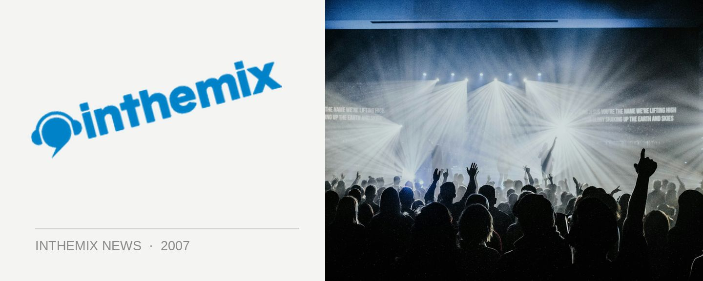

Sharam Jey extra club dates
DJ, producer and record label owner Sharam Jey will be in Sydney for the national We Love Sounds extravaganza, but he’ll be flying around the country for a bunch of extra club dates. He’ll be promoting the fifth anniversary of his King Kong record label as well as the release of a CD compilation marking its turning point – called 5 Years of King Kong Records funnily enough!
Sharam Jey has been a regular visitor to Australia shores, and following a successful series of shows in 2005 he returned last year for a tour that also saw him putting together a CD for Sydney club night Kink. Pushing the boundaries of the electro sound, his DJ sets take in elements of house, tech, breaks and rock. As well as running his own label, he also released his debut album 4 Da Loverz on Darren Emerson’s Underwater imprint.
Catch Sharam Jey playing the following dates during June…
1st June: Kink@Bustin, Wollongong
2nd June: Kink@4Play, Geelong
3rd June: We Love Festival, Perth
8th June: We Love Festival, Melbourne
9th June: We Love Festival, Brisbane
10th June: We Love Festival, Sydney
15th June: Kink@Platinum, Gold Coast
16th June: Kink @Arthouse, Sydney
17th June: Smut@LadyLux, Sydney